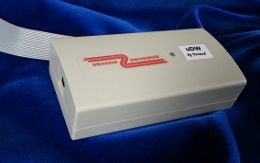
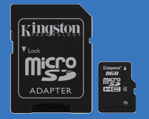
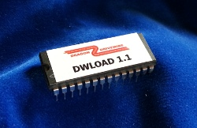
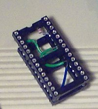

uDW - SD card storage for your Dragon
The uDW Microserver brings DriveWire to your Dragon - without needing another computer
|  | uDW
The uDW DriveWire microserver is a standalone, SD card based mass-storage solution for your Dragon. Put all your programs and files onto an SD card and access them on the Dragon as if it had a floppy drive or PC-based DriveWire server. Plugs into the printer port, no other cables or power supplies needed.
|
Ordering and shipping information
Finally an affordable mass-storage solution is available for the Dragon 32 and Dragon 64 home computers. Looking for a tape or floppy replacement? Love DriveWire but not the hassle/cables/configuration/noise of an extra computer? Want to free up the cartridge port from disk drives? The uDW might be what you are looking for.
- Dimensions 10 x 5 x 3 cm
- Compatible with all DriveWire-enabled software (DWLOAD, HDB-DOS, NitrOS-9, ...)
- Connects to printer port
- Powered by the Dragon
- Uses standard micro-SD cards (FAT formatted)
- Built-in real time clock
- Firmware upgradeable over USB
- Includes cable
Fast and reliable
As soon as you turn on your Dragon the uDW is ready to serve. It therefore works wonderfully with the power-on autoload feature of the DWLOAD EPROM, allowing you to "boot" straight into your favorite program or start-up menu stored on the SD card.Real time clock
Keeps track of time and date even if the Dragon is not powered (requires 3V CR2032 cell battery, not included). Fully DriveWire compliant, additionally time can be set using DWLOAD.Compatibility
The uDW complies to all file and time requests generally used by DWLOAD, HDB-DOS and NitrOS-9. Some features of the computer-hosted DW4 server like virtual channels and midi is not supported, although support might be added in future firmware upgrades where it can make sense.Firmware and hardware hacks
For the advanced user, the uDW is a great platform for adding functionality. Firmware sources are available (written in C). There are several connectors inside for extra outputs or extensions.Extras (not sold separately)
|  | SD card
(limited stock) This is a standard SD card from Kingston, prepared with example files and utilities to get you going. Includes micro-SD to SD card adapter.
|
|  | DWLOAD EPROM
DWLOAD is the easiest way to get started with DriveWire. No DOS needed, this ROM modification recycles the old "DLOAD" command to turbo charge your Dragon 32 or 64. Load files from your uDW or DriveWire server as easy and fast as it possibly can get. This EPROM replaces the BASIC PROM on the motherboard. 100% compatible with the original Dragon 32 BASIC ROM.
|
|  | EPROM adapter for Dragon 32
On the Dragon 32, a 28-pin to 24-pin adapter is needed to fit the DWLOAD EPROM to the motherboard socket. Can also be used for other 28-pin EPROMs. No adapter is needed on a Dragon 64.
|
 |
Chip puller
(limited stock) Helps to remove the original PROM from the socket when fitting the DWLOAD EPROM.
|
Ordering and shipping information
More detailed information on these items will follow. For now, more information can be found in the Dragon forums on uDW, deluxe adapters, dw adapters, +32K, DWLOAD EPROMs
Dragon software
- DWLOAD - the easiest way to use DriveWire link
- HDBDOS ported to Dragon 32 (can also run from RAM) link
- NitrOS-9 for your Dragon 32 (memory extension recommended) link
This software can be downloaded for free and is open-source. See the respective web sites for licensing and authorship. There are many contributors, in some cases I am the project maintainer, and/or have written the Dragon port.
Answers
See the FAQ and if that didn't help, contact me at